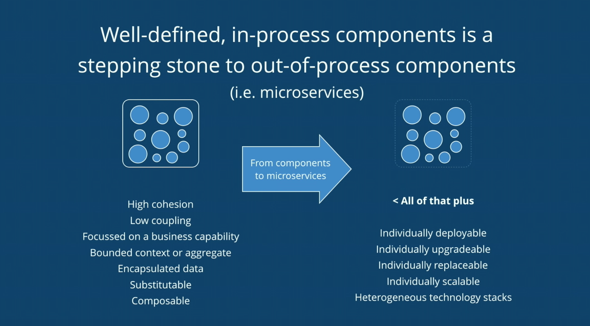

우리가 만드는 소프트웨어는 변경을 수용하고, 시장의 변화에 맞춰서 변화할 수 있도록 해야하며, 규모가 커짐에 따라서도 빠르게 반응할 수 있어야 한다.
모노리스(monoliths)
예상치 못한 결합
부족한 장애 내성
늦은 출시 싸이클
높은 테스트 비용
단일 확장성
단일 프로젝트에 모든 코드가 모여있다.
시스템 구조가 간결하고, 빠르게 구축할 수 있다.
테스트 및 배포 파이프 라인 구성이 간단하다.
인프라스트럭처 구축와 운용이 간결하다.
마이크로 서비스
조직 부합성
확장성
배포 용이성
회복성
대체 가능성
조합성
기술 이기종성
시스템을 조직 구조에 맞게 더 적절히 정렬 할 수 있다.
서비스를 독립적으로 배포 또는 확장할 수 있다.
서비스 장애가 시스템 전체 장애로 전파되지 않는다.
문제 해결에 특화된 다양한 기술을 도입할 수 있다.
모노리스(monoliths) 와 마이크로서비스(microservices) 중 무엇이 옳다고 할 수 없다. 주어진 상황에 따라 적절한 도구를 선택하라.
좋은 아키텍처는 시스템이 모노리틱 구조로 태어나서 단일 파일로 배포되더라도, 이후에는 독립적으로 배포 가능한 단위들의 집합으로 성장하고, 또 독립적인
서비스나 마이크로 서비스 수준까지 성장할 수 있도록 만들어져야 한다. 또한 좋은 아키텍처라면 나중에 상황이 바뀌었을 때 이 진행 방향을 거꾸로 돌려 원래 형태인
모노리틱 구조로 되돌릴 수 있어야 한다.
모듈화란 소프트웨어 시스템을 분해하여 서브시스템들과 컴포넌트들의 그룹으로 묶는것이다.
주요목적은 시스템 내에 잘 정의된 경계를 도입해 소프트웨어 복잡성을 다루는 것이다.
관심사의 분리를 통해 '어플리케이션'을 외부 기술적인 부분들과 분리시키는 것이 목표이다.
어떤 아키텍처를 선정하여 문제가 해결된다기 보다는 요구사항에 대한 코드의 응집과 결합도를 다스리는 게 무엇 보다 중요하다.
오해하는 것은 아키텍처 스타일이 문제를 해결해주지 않는다.
좋은 구조는 적은 변경 비용을 수용할 수 있어야 한다.
변경에는 어떤 식으로든 비용이 발생한다. 좋은 구조는 합리적인 비용안에서 변경을 수용할 수 있다. 적절한 비용안에서 쉽게 변경할 수 있는 설계는 응집도가 놓고 서로 느슨하게 결합돼 있는 요소로 구성된다.
응집도를 높여야 변경에 자유로울 수 있음
영향도를 최소화할 있음
높은 결합도로 인한 변경 영향성을 최소화할 수 있는 방법으로 가야함
자바에서는 모듈화 활용
내부 구현은 숨기구 외부 API를 이용해 통신해야 한다.
변경을 수용할 수 있는 소프트웨어 아키텍처를 말함.
어플리케이션의 핵심을 외부 기술로 부터 분리시키는 것
헥사고날 아키텍처
어니언 아키텍처
클린 아키텍처
Just Enough Software Architecture
Software Reflection Models
코드 구조는 아키텍처 의도를 반영해야한다.
Package By layer
Screaming Architecture
Presentation Domain Data Layering
Package By feature
기능적인 측면일 기준으로 Package를 구분하고, 수직으로 자르는 방식
둘은 뭐가 좋냐가 아니라 다를 뿐이다. 그것보다 더 중요한 것은 높은 응집도, 낮은 결합도, 찾기 쉬운 연관된 코드이다.
중요한 것은 결국엔 헥사고날 아키텍처, 클린 아키텍처, onion architecture이다.
cargo culted
Architect Principle
JQ Assitance
컴포넌트에 의한 패키지는 Coponent Base와 sevice-oriented를 지향한다.
좋은 아키텍처는 민첩을 가능하게 한다.
거대한 모노리틱 구조의 서비스를 잘게 마이크로 서비스로 분리한 다고 했을때, 효과적인 마이크로 서비스로 만들어지는 것이 아닌 큰 진흙 덩어리가 분산된 수준의 마이크로 서비스로 구성되고 이는 안하느니만 못한 결과를 가져온다.
따라서 이때의 대안을 우리는 모듈라 모노리스라고 생각한다.
https://www.youtube.com/watch?v=5OjqD-ow8GE
https://futurecreator.github.io/2018/09/14/what-is-microservices-architecture/
https://blog.coderifleman.com/2017/12/18/the-clean-architecture/
